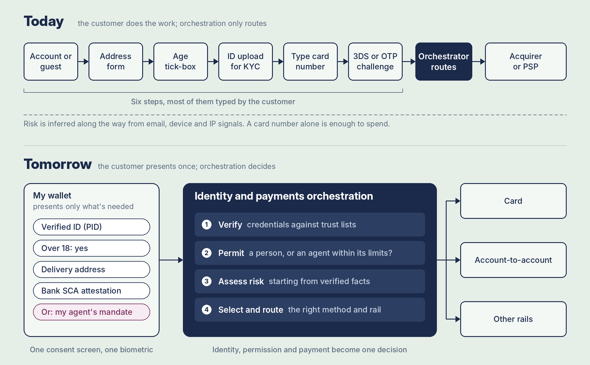

Back to the Future (of Identity)
Published on Mon November 9, 2026
Unless you have a time machine it is still difficult to predict the future. But I seem to have a habit of trying.
Back in 2010 I predicted that within a few years I would be able to leave my house with only my smartphone, meaning I could make payments, start my car and open my house using just my phone. On 21 October 2015 (the day Marty McFly arrived in the future) I wrote Back to the Future (of Payments) and admitted I was a little off. Apple Pay had arrived, but I still needed my keys, and I could only spend under £30 with a tap.
In 2020 Apple announced NFC-based car keys and I declared victory on LinkedIn. Phone, payments, maps and car keys, all in one device. I also made a new, slightly cheeky prediction: in 10 years I won't have to leave my house at all (if I don't want to). I have until 2030 on that one, so let's call it a work in progress.
This year I got a new car, and now I regularly leave the house with only my phone. The car unlocks as I walk up to it, the payment happens with a tap (or a slightly awkward twist of the arm to align my watch to the terminal), and the keys stay in the drawer. Sixteen years on, the first prediction is finally, properly true. :dance:
So, what's next?
My new (not so bold) prediction
In 10 years (by 2036), identity will be served by government-issued digital IDs, held in self-sovereign identity (SSI) wallets built on decentralised identifiers (DIDs) and verifiable credentials. Those wallets won't just hold who I am. They will hold what I'm allowed to do, and they will become the centre of how I pay.
Which means payment orchestration as we know it will have to evolve. It won't just be about routing a card to the cheapest or most successful acquirer or choosing between payment methods. It will be identity and payments orchestration.
Put another way: the phone got me out of the house without my keys. The wallet inside it is about to get me through the checkout without my email address, my card number or my date of birth.
Funnily enough, I half-predicted this one back in 2010 too, when I wrote that I'd like to transmit my ID or driving licence to a policeman's device. The phone was ready. It just took a while for governments to catch up.
Why now?
Because this time the regulators are pulling, not just the tech companies pushing.
Under eIDAS 2.0, every EU member state has to offer its citizens at least one EU Digital Identity (EUDI) Wallet by 24 December 2026. That's six weeks away as I write this. Readiness is patchy (Germany, for example, is targeting 2 January 2027), but the deadline is law.
The bit that caught my eye as a payments person is the EUDI Payment Authentication use case. By the end of 2027, payment service providers will have to accept the wallet for Strong Customer Authentication when a user asks for it. The wallet works on top of existing rails, cards and SEPA instant account-to-account payments alike, so nobody has to rip anything out.
Under the hood it is exactly the SSI stack: banks issue an "SCA attestation" into the wallet as a verifiable credential, and the wallet presents it, plus things like proof of age, to the merchant or PSP with selective disclosure. One tap, one biometric, and the merchant gets the payment authorised and the identity facts it needs. The large-scale pilots (EWC and NOBID) have already demoed buying wine online with the age check and the payment in the same flow.
Of course, it's never a straight line. Here in the UK the new government scrapped the national digital ID scheme in July, after nearly 3 million people signed a petition against it. So I'll concede that "government-issued" may arrive via Brussels before it arrives via Westminster. That's why this is a 10-year prediction and not a 2-year one.
The checkout that doesn't ask questions
In 2015 I said the high street's secret weapon was that there were no shipping costs, billing addresses or passwords to remember. You just tapped and walked out. Online checkout has spent a decade trying to catch up, and identity wallets are how it finally does.
Picture a checkout that never asks what your address is, or whether you're over 18. The wallet already holds a verified address and a verified age, and it shares only what the merchant needs: "yes, over 18", not my date of birth.
Picture never handing over a persistent credential again. No 16-digit card number for a merchant to store (and lose), and no faffing about generating single-use virtual cards and pasting them into forms. The wallet presents a signed, one-time proof that I authorised this payment, to this merchant, for this amount.
And picture the end of two very old habits:
- An email address will no longer serve as an identity. It was only ever a contact detail that we turned into a login, a customer ID and a fraud signal because we had nothing better.
- A card number will no longer serve as a ticket to an account. Knowing a number shouldn't be enough to spend someone's money. Holding a key should.
There are already wallets in payments that do some of this, and they've made card payments far more secure with tokens and biometrics. The missing piece has always been identity and permission. SSI and DIDs are that missing piece.
A valet key for my AI agent
Here's where it gets interesting. Identity wallets cross over perfectly into the agentic world.
My car has a valet mode. I can hand someone access to drive it, but with limits on what they can do. I want exactly the same thing for my AI agent: a sub-key, signed by my wallet, that says this agent can buy my weekly groceries, up to £120, from these shops, until the end of the month. I can see it, I can cap it, and I can revoke it with one tap.
The industry is already heading there. Google's Agent Payments Protocol (AP2) represents what a user has authorised as signed "mandates", carried as verifiable credentials (the same SD-JWT format the EUDI Wallet uses for payment authentication). In April 2026 Google donated AP2 to the FIDO Alliance, alongside Mastercard's Verifiable Intent framework, and FIDO set up working groups on agent authentication and agentic payments, with Mastercard and Visa chairing the payments one. The people who gave us passkeys are now working on agent keys.
The EU has also pencilled it in in their TS12 technical specification for paying with the wallet. TS12 defines a signed e-mandate for recurring and merchant-initiated payments, with a note that it may be extended in a future version to cover agentic commerce.
The question at checkout changes. It used to be "are you the cardholder?" Next it becomes "is this agent authorised by a verified person, and is this purchase inside the limits they set?" A card number can't answer that. A wallet-signed credential can.
From payment orchestration to identity and payments orchestration
So where does this leave payment orchestration? Today an orchestration layer decides which acquirer, which token and which retry strategy gives the best chance of approval at the lowest cost. That job doesn't go away. But it grows.
Tomorrow's orchestration layer will also need to request the right credentials (age, address, SCA attestation) from whichever wallet the customer brings, verify them against trust lists, and work out whether the payer is a person or an agent acting under a mandate. Then it routes the payment. Identity, permission and payment become one decision, made in one flow.

But won't the wallet just do it all?
If the wallet holds my identity and my payment methods, and I pick how to pay inside the wallet, isn't checkout just a handoff?
Partly, yes. The payment method picker, the hosted payment page and the card form might eventually shrink to almost nothing. But 1) this will happen over a long period where the 'old' checkout is alongside the 'new' and 2) the wallet will not complete the actual payment and there are merchant-orientated steps that will still require orchestration.
The way I think about it: the wallet is the customer's agent, and the orchestrator is the merchant's agent. The wallet looks after what I'm willing to share and how I'm willing to pay. It doesn't care about the merchant's costs, acquirers, compliance duties or fraud losses. Someone still has to look after the merchant's side, and that's where the value moves:
- Deciding what to ask for. Which attributes, which payment methods, at what level of assurance. Age limits differ by country and product, and asking for more than you need is a data protection problem in its own right
- Verifying what comes back, from every wallet. At least 27 national EUDI wallets, plus Apple, Google, bank and private ones, each with its own formats, trust lists and revocation checks. Merchants will want one integration that handles all of them, which is what orchestration already does with PSPs
- Shaping the choice. The customer picks in the wallet, but the merchant still decides what's on offer: account-to-account first with a discount, say, or no expensive method on a low-margin basket
- Everything after the authorisation: routing, retries, refunds, recurring payments, reconciliation and disputes
- Keeping the evidence. When my agent buys under a mandate, the merchant needs the signed proof for the day I say "my agent didn't mean that".
- Risk that changes rather than disappears. Verified identity kills a lot of impersonation, but scams, friendly fraud and promo abuse are about intent, not identity.
And there's a bigger reason. If wallets centralise payments, as I'm predicting, they become the new gatekeepers. Orchestration's real job has always been making sure the merchant isn't locked in to one provider. I’d expect that to extend to wallets too.
So the checkout itself may get simpler, but the work behind it gets bigger, and that’s why I think payment orchestration has to become identity and payments orchestration
I'll check back in 2036
In 2015 I predicted that online and offline would eventually become indistinguishable, with a single customer experience. Identity wallets get us a big step closer: the EU's own demos use the same wallet, the same consent screen and the same biometric whether you're in a shop or on a website.
So here's my (fairly bold) prediction. By 2036, the checkout will know who I am, what I'm allowed to do and who I've allowed to act for me, without me typing a single thing. I'll check back in 10 years. And yes, I'm still working on not having to leave the house at all.
Let me know what you think!
References
- Technology Consolidation Prediction, originally published 22 May 2010
- Back to the Future (of Payments), originally published 21 October 2015
- EUDI Wallet: Payment Authentication use case, European Commission
- TS12: Specification of Strong Customer Authentication (SCA) Implementation with the Wallet, European Commission, v1.0, December 2025
- Status check: 9 months to the EUDI Wallet, Namirial
- UK government scraps plans for digital ID cards, TechCrunch, 21 July 2026
- FIDO Alliance wants to keep AI agents from going rogue on online payments, Help Net Security, 29 April 2026